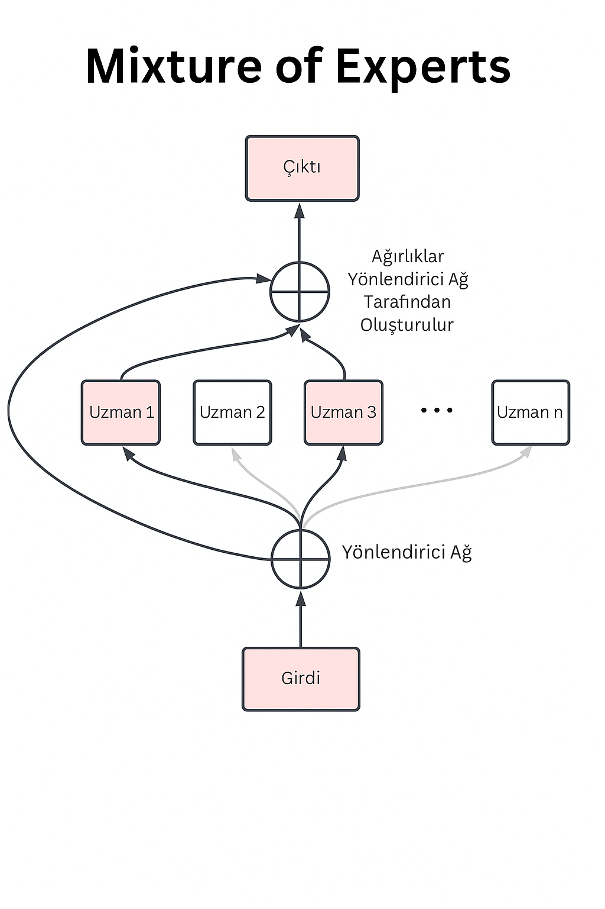

Sesli Dinle
Mixture of Experts (MoE) Mimarisi Nedir?
Mixture of Experts (MoE),büyük ölçekli derin öğrenme modellerinin tüm bileşenlerini aynı anda çalıştırmak yerine, sadece belirli görevler için özelleşmiş alt bileşenlerin—yani uzman ağların—etkinleştirilmesine dayanan bir yapay zekâ mimarisidir.
Bu yaklaşıma göre her bir girdi (örneğin bir kelime, cümle veya görsel öge), tüm modelin işleminden geçmek yerine yalnızca o girdiye özgü bilgi işleme kapasitesi yüksek olan birkaç uzman alt ağına yönlendirilir. Böylece, model yalnızca gerekli uzmanları devreye sokarak hem hesaplama yükünü azaltır hem de işlem süresini optimize eder. Bu seçici aktivasyon, büyük parametreli modellerin ön eğitim ve çıkarım süreçlerinde önemli ölçüde verimlilik sağlamaktadır.

MoE mimarisinin kökeni, Jordan ve Jacobs tarafından 1991 yılında önerilen “Adaptive Mixture of Local Experts” çalışmasına dayanmaktadır. Bu çalışmada, her biri farklı veri alt kümelerinde uzmanlaşmış çok sayıda alt ağdan oluşan bir sistem sunulmuş; bu sistemde hem uzmanlar, hem de girdiyi hangi uzmana yönlendireceğini öğrenen bir geçit ağı (gating network) birlikte eğitilmiştir. Elde edilen deneysel sonuçlar, bu yapının klasik tekil modellere kıyasla aynı doğruluk seviyesine, daha az sayıda eğitim döngüsü ile ulaşabildiğini ortaya koymuştur.
Üretken yapay zekâ ve büyük dil modellerinin (LLM) hızla yaygınlaşmasıyla birlikte, model boyutları yüz milyarlarca parametreyi aşarken, MoE (Mixture of Experts) mimarileri toplam parametre kapasitesini trilyon düzeyine çıkararak ölçeklenebilirlik ve işlem verimliliği açısından kritik bir çözüm olarak öne çıkmaktadır.
Derin Öğrenmede Mixture of Experts (MoE) Yaklaşımı
Günümüz derin öğrenme modelleri, çok katmanlı ve birbirine bağlı yapay sinir ağları yapısıyla yapılandırılmıştır. Bu modellerde her bir nöron, önceki katmandan gelen girdilere bir aktivasyon fonksiyonu uygulayarak çıktısını bir sonraki katmana iletir. Modelin öğrenme yetisi, bu katmanlar arasındaki bağlantılarda bulunan parametreler—yani ağırlıklar ve bias terimleri—aracılığıyla sağlanır. Öğrenme süreci, bu parametrelerin hedef çıktılara yönelik doğru tahminleri maksimize edecek şekilde optimize edilmesiyle gerçekleşir; bu amaçla genellikle gradyan inişi (gradient descent) gibi optimizasyon yöntemleri kullanılır.
Bununla birlikte, modelin parametre sayısının artması, kuramsal kapasitesini ve ifade gücünü yükseltirken, aynı zamanda hesaplama maliyetlerinde de ciddi bir artışa yol açmaktadır. Geleneksel yoğun (dense) yapılarda, her bir giriş örneği için tüm ağ yapısı aktif hâle gelir. Bu durum, model performansı ile işlem verimliliği arasında kaçınılmaz bir denge kurulmasını zorunlu kılar.
MoE mimarileri ise bu denge sorununa koşullu hesaplama (conditional computation) yaklaşımıyla çözüm sunmaktadır. Bu yöntemde, her bir giriş yalnızca ilgili ve görevle en uyumlu birkaç uzman modüle yönlendirilir; böylece ağ genelinde seyrek (sparse) bir aktivasyon sağlanır. Sonuç olarak, modelin toplam parametre sayısı artırılsa dahi, aktif hesaplama, yalnızca sınırlı sayıdaki uzmanla gerçekleştirildiği için işlem maliyeti sabit tutulabilir. Bu yaklaşım, özellikle büyük ölçekli modellerde hem verimlilik hem de ölçeklenebilirlik açısından önemli avantajlar sunmaktadır.
MOE Yapısının Temel Bileşenleri
1. Expert (Uzman) Alt Ağlar
Her biri bir transformer bloğu veya küçük bir model gibi çalışan, farklı görevlerde uzmanlaşabilen alt ağlardır. MoE’de genellikle 8–16 uzman barındırılır, ancak bunların yalnızca birkaç tanesi aktif hale gelir . Örneğin bazı uzmanlar matematiksel işlemlerde, bazıları şiir üretiminde, bazıları ise kod yazımında daha başarılı olabilir.
Örneğin Mixtral 8x7B’de her uzman farklı türde cümleleri veya görevleri öğrenmiş olabilir. Aşağıdaki örneklerle açıklamaya çalışalım:
Örnek 1: Matematik Uzmanı
Girdi: “Bir üçgenin iç açıları toplamı kaç derecedir?”
Bu cümle matematiksel bilgi içerdiği için yönlendirici büyük ihtimalle “Matematik Uzmanı” olan Expert 3 ve belki “Bilgi Anlamlandırma Uzmanı” olan Expert 6’yı seçer.
Bu uzmanlar zamanla bu tür hesaplamalı veya mantıksal cümleleri çözmede iyi hale gelmiştir.
Örnek 2: Günlük Sohbet / Diyalog Uzmanı
Girdi: “Bugün nasılsın?”
Bu tür sohbet dili için model büyük ihtimalle “Diyalog Uzmanı” olan Expert 2 ve belki “Sentiment Analizi Uzmanı” olan Expert 5’i seçer. Bu uzmanlar daha önce sohbet verileriyle eğitilmiş oldukları için, bu dil tarzını daha iyi işlerler.
Örnek 3: Kod Yazma
Girdi: “Python’da bir listeyi nasıl sıralarım?”
Bu soru bir yazılım/kodlama içeriği içeriyor. Yönlendirici burada örneğin Expert 1 (kod uzmanı) ve Expert 7’yi seçebilir. Çünkü bu uzmanlar kod verileriyle eğitilmiş, sort(), lambda, for loop gibi yapıları çok iyi tanıyor olabilir.
Örnek 4: Fransızca Çeviri
Girdi: “Comment ça va ?” (Fransızca bir giriş cümlesi)
Yönlendirici bu durumda “Çok dilli uzmanlar” olan Expert 4 ve Expert 6 gibi Fransızca verilerle eğitilmiş uzmanları aktif hale getirir.
2. Gating Ağı (Router) (Yönlendirici)
Yönlendirici modülü, verilen girdinin hangi uzmanlara gönderileceğine karar verir. Bunu yaparken, girdi verisini analiz eder ve “top k routing” gibi stratejilerle en uygun uzmanları seçer (örneğin top 2, top 4). Seçim genellikle softmax ağırlıklarıyla yapılır ve her adımda yalnızca birkaç uzman aktif hale getirilir (örneğin 2 uzman seçilir).
3. Seyrek Aktivasyon (Sparse Activation)
Modelde örneğin 16 uzman varsa, her girdi için sadece 2’si çalıştırılır. Bu da MoE’yi “seyrek” bir yapı haline getirir. Bu sayede,model toplamda devasa bir boyuta sahip olsa da, çalışma zamanında sadece küçük bir kısmı aktif olur.
MoE Neden Kullanılır?
🔹 Hesaplama Verimliliği
MoE, çok büyük modellerin sadece küçük bir kısmını çalıştırarak aynı doğrulukta sonuçlar elde etmeyi mümkün kılar. Bu, özellikle inference (çalıştırma-çıkarım) aşamasında gecikmeyi ve enerji tüketimini önemli ölçüde azaltır.
🔹 Görev Bazlı Uzmanlık
Farklı alt modüller farklı görevlerde uzmanlaşabilir. Model zamanla hangi girdilerin hangi uzmanlara gitmesi gerektiğini öğrenebilir ve bu da genel performansı artırır.
🔹 Hataya Tolerans
Hata toleransı artar; bir uzman devre dışı kalsa bile, diğerleri çalışmaya devam eder.
🔹 Ölçeklenebilirlik
MoE, toplam parametre sayısını artırarak modelin kapasitesini büyütmeyi mümkün kılar. Ancak inference sırasında bu büyük yapının yalnızca küçük bir parçası kullanıldığından maliyet kontrollü kalır.
Güncel MoE Tabanlı Modeller ve Uygulamalar (2023–2025)
1. Mixtral 8x7B – Mistral AI (2023 Q4)
• 8 uzmanlı bir modeldir.
• Her bir giriş için yalnızca 2 uzman etkinleştirilir.
• Toplam parametre sayısı yaklaşık 46 milyar, etkin parametre sayısı ise yalnızca 12.9 milyardır.
• Açık kaynak olarak sunulmuş ilk başarılı MoE LLM’lerden biridir.
• Kodlama, mantıksal çıkarım ve doğal dil görevlerinde son derece başarılıdır.
2. DBRX – Databricks (2024 Q1)
• 132 milyar parametreye sahiptir.
• Her token girişi için 4 uzman aktiftir.
• Ölçek ve hız açısından oldukça iddialıdır.
• Büyük dil modeli altyapılarına entegre edilebilir durumdadır.
3. Google Gemini 1.5 Pro (2024)
• Tam teknik dokümantasyonu paylaşılmamıştır, ancak MoE yapısına yakın dinamik uzmanlaşma mekanizmaları kullanmaktadır.
• Multimodal girişler (metin, görsel, kod vb.) için farklı uzman modülleri devreye sokulabilmektedir.
4. OpenMoE – Hugging Face Topluluğu (2024)
• Eğitim stratejileri, load balancing ve yönlendirici mimarilerini araştırmak için açık kaynak MoE frameworktür.
• OpenMoE 8B ve 8B Chat, 8 milyar parametre, 4 MoE katmanı, 32 uzmanlı yapıdır. 1.1 trilyon token üzerinden eğitilerek hem ön eğitim hem de SFT (instruct tuning) yapılmıştır.
• OpenMoE 34B, 34 milyar parametreli modeldir. 8 MoE katmanı ve 32 uzmanla hâlen eğitilmektedir. 200 milyar token’a ulaşmış durumdadır.
5. Llama 4 – Meta AI (2024)
• Llama 4’ün Scout ve Maverick versiyonları MoE mimarisi üzerine inşa edilmiştir.
• Scout: Toplam 109 milyar parametre, 16 uzman içerir. Her token için ortalama 17 milyar parametre aktif olmaktadır.
• Maverick: Toplam 400 milyar parametre, 128 uzman içerir. Yine yaklaşık 17 milyar parametre aktif olmaktadır.
• LLaMA ailesinin önceki versiyonlarına kıyasla ölçeklenebilirlik, verimlilik ve bağlamsal tutarlılık açısından önemli iyileştirmeler içerir.
• Akademik ve endüstriyel kullanımda, özelleştirilmiş uzman modülleri sayesinde farklı görevler için esnek şekilde optimize edilebilir.
Teknik Zorluklar
MoE mimarisi güçlü olsa da çeşitli teknik zorlukları beraberinde getirmektedir:
🔸 Yönlendirici Öğrenmesi
Yönlendirici modülü yanlış uzmanları seçerse modelin performansı düşer. Bu nedenle yönlendirici eğitimi dikkatle yapılmalıdır.
🔸 Load Balancing (Yük Dengelemesi)
Bazı uzmanlar çok fazla, bazıları çok az kullanılırsa model dengesiz öğrenir. Bu, performans kaybına ve kaynak israfına yol açabilir. Bu dengesizliği önlemek için entropy tabanlı denge kayıpları kullanılır.
🔸 Yüksek VRAM (Video Belleği) Gereksinimi:
MoE’lerin mimarisinden kaynaklanan bir diğer pratik zorluk, yüksek VRAM gereksinimidir. Her ne kadar bir token aynı anda tüm uzmanları etkinleştirmese de, çıkarım veya eğitim sırasında tüm uzmanların parametrelerinin belleğe yüklenmesi gerekmektedir. Bu, özellikle çok sayıda uzmana sahip büyük MoE modelleri için önemli miktarda VRAM gerektirir.
Örneğin Mixtral 8x7B FP16 formatıyla çalıştırıldığında yaklaşık 92 GB VRAM veya bunun kadar CPU RAM/VRAM karma ihtiyaç duyulabilmektedir.
Özellikle büyük MoE modeller (örneğin Llama 4 Maverick) VRAM ihtiyacı 300–400B parametre için tek GPU’da kullanılamayacak düzeydedir. Küçük ölçekli donanımlarda veya sınırlı bellek kaynaklarına sahip ortamlarda MoE’leri çalıştırmak zorlaşabilir. Bu sorunu hafifletmek için, uzmanları belleğe dinamik olarak yükleme/boşaltma veya uzmanların farklı cihazlara dağıtılması gibi stratejiler geliştirilmektedir.
🔸 İnce Ayarda (Fine-tuning) Genelleme Zorlukları ve Aşırı Uyum (Overfitting):
MoE’lerin en önemli sorunlarından biri, ön eğitimden sonraki ince ayar aşamasında ortaya çıkar. Geçmişte, MoE’ler ince ayar sırasında yoğun modellere kıyasla genelleme konusunda zorluklar yaşamış ve belirli veri kümelerine aşırı uyum (overfitting) eğilimi göstermişlerdir. Aşırı uyum, modelin eğitim verilerini çok iyi öğrenmesi ancak yeni, bilinmeyen verilere kötü performans göstermesi anlamına gelir. Bu, MoE’lerin geniş bir uygulama yelpazesinde güvenilir bir şekilde kullanılmasını engelleyebilir. Bu sorunun nedenleri ve çözümleri üzerine yoğun araştırmalar devam etmektedir. Potansiyel çözümler arasında daha gelişmiş yönlendirme mekanizmaları, düzenlileştirme teknikleri ve ince ayar için özel optimizasyon stratejileri yer almaktadır.
🔸 Dağıtık Eğitim Altyapısı
Yüzlerce uzmanı çalıştırmak ve yönetmek, güçlü paralel ve dağıtık altyapılar gerektirir. Özellikle büyük modellerde GPU dağıtımı karmaşık hale gelebilir.
MoE’nin Geleceği
MoE, büyük dil modellerinin daha verimli ve uzmanlaşmış hale gelmesi için kritik bir adımdır. Önümüzdeki dönemde:
• Dinamik MoE yapılarla uzman sayısı koşullara göre değişebilecek,
• Multimodal MoE sistemlerle metin, görsel ve ses uzmanları birlikte çalışacak,
• Kendi kendini organize eden uzmanlar ile daha az insan müdahalesiyle uzmanlık oluşacak,
• Donanım odaklı karar verme ile yönlendirici aynı zamanda kullanılabilir GPU/CPU’ya göre seçim yapabilecektir.
OpenAI, Google, Meta, Mistral gibi öncü kuruluşlar MoE temelli modeller geliştirmeye devam ederken, bu yapı araştırma ve üretken yapay zekâ alanında devrim yaratmaya aday bir mimari olarak öne çıkmaktadır
Sonuç:
Mixture of Experts (MoE), büyük dil modellerinin hesaplama yükünü hafifletirken uzmanlaşma ve modülerlik kazandıran güçlü bir mimaridir. Büyük dil modellerinin giderek daha fazla alanda kullanılması, bu tür mimarilerin daha da önem kazanmasına neden olmaktadır. Gelecekte, daha stabil, daha modüler ve daha az kaynakla çalışan MoE modellerinin yaygınlaşması beklenmektedir. Maliyet, hız ve doğruluk arasında en iyi dengeyi arayan herkes için, MoE mimarisi kullanılan modeller değerlendirilmesi gereken önemli bir seçenek olarak öne çıkmaktadır.